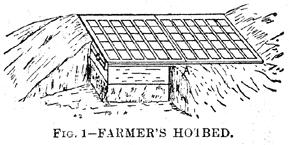
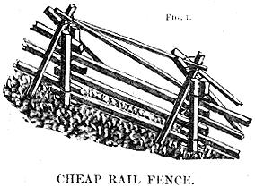
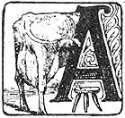
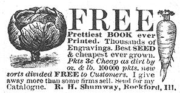
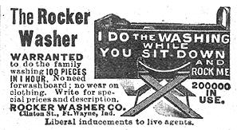
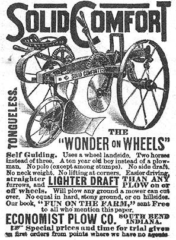
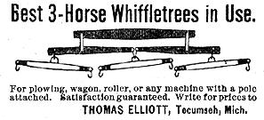
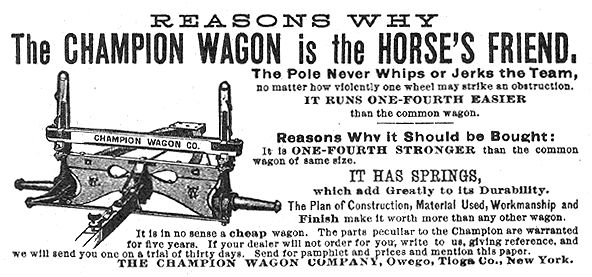

Back in MOTHER NO. 18 we brought you the best of what we found while rummaging through some of the early farm publications. Here then - repeated by popular demand - are two more pages of that old-timey information taken from issues of THE OHIO PRACTICAL FARMER dated 1884 to 1902.
The methods of preparing and caring for a hot-bed are very simple, and with a little forethought and care one should have no trouble. The ordinary stock size of hot-bed sash, carried in stock by dealers is 3x6 ft., but my old sash will answer the purpose.
The hot-bed should be laid out to extend east and west, and the north side of the frame should be about six inches higher than the south side, to give the glass a pitch toward the sun. Take a plank or board ten inches wide for the front and one sixteen inches wide for the back is about right. The ends of the frame should come up even with the top of the side planks, and be ripped off to give the proper pitch. A cleat should be nailed on the end of the hot-bed shown at C, in Fig. 1, to (told the sash from slipping endwise. The frame should also have it stay across the top about every six feet to prevent the sides from springing out; shown at A, Fig 1. About the 1st to 15th of March, according to the earliness of spring preparations should be made for the hot-bed. Select some sheltered spot where there is plenty of sunshine and dig out a hole about one foot larger than the frame on every side and about 2 1/2 feet deep. deep.
Draw out a load or two of fermenting horse manure. If the manure is heating evenly .ill through it may be put into the pit at once, if not it should be shaken up roroughly and piled up in a close, compact pile arid left a few days. If any portions of it are dry, it should be wet down. In filling the pit, care should be taken to tread down the manure firmly. The manure should extend beyond the frame on all sides, one foot at least, then set on the frame and bank it up on the outsides to the top of the frame with manure.
Next put on six to eight inches of soil, put on the sash, and let it sweat. By about the third or fourth day it will do to sow to seed. Radishes, lettuce, and onion sets may be put in along with cabbages, pepper and egg plants. The sash should be raised a little everyday to give the plants fresh air. When moisture begins to gather on the under side of the glass you may know the temperature is running too high and that, fresh air should be admitted. Care must be taken not to allow cold wind to blow on the plants. In cold nights the sash should be covered with straw matting or burlaps, and in case of rain or snow it is well to have air improved hot-bed shutter, the same size as the top of the hot-bed. This shutter saves time and labor. To make it get strips of 8/8-inch thick lumber, nail these onto cleats 7/8 in. x 2 in., at ends and middle, then take some building paper and spread over the enthe surface, their fill and pack the spaces with rye straw. Cover again with building leaner slid nail on the boards on the under side. This shutter takes the place of the ordinary board shutter and straw mats and saves time in handling. Two iron handles, like door handles, screwed on near each end, midway, help handle it. One can do quite a business with a few hot-beds of this kind.
-C. H. Hickox, Geauga Co., O.
Dig holes two feet deep, three feet apart, in rows four feet apart. Put a peck of manure in each hole, chopping a little rich dirt into the manure with the spade; then fill in eight inches on this with rich earth, so as to bring it up nearly even with the surface of the ground. Set a small, thrifty plant in each hole, hill up with the hoe every week until you have ridges along the line of plants, knee high, and the tops begin to fall over; then clean out between the ridges, drawing all the looser dirt up to the tops of the ridges, leaving clean, bare trenches between. Place fence rails across from one ridge to another, under the vines, and upon these lay poles lengthwise with the rows, making a scaffold for the vines to spread out on. A dozen plant, so treated, will furnish a supply of tomatoes for a large family until frost comes. Try it.
Big Clear Creek, W. Va. C. T. H.
It is a loss of tines and eggs to set a hen unless some attention is given the selection of the eggs for that purpose. When a lien becomes broody some take eggs from the egg basket and place them in the nest with no regard to their shape or size. There is no method of knowing if an egg is fertile until the hens was warmed it for three or four days.
In selecting eggs use no small or large eggs, but take those of normal size running about eight to a pound. The weight varies with the different breeds, however, Brown Leghorn eggs are some lighter. Eight weighing 15 ounces. Care should be taken that each egg selected is perfect in its drape. Double yolk eggs; small, irregular shapes and those which have excrescences on the shells should be avoided. Extra large eggs are from hens that are not in proper condition, while very small eggs may come from immature pullets. Secure eggs front your inost prolific hens. Attention to this matter may enable you to have a better hatch.
-W. Hearn
Every FARMER should save his poultry manure for the garden, if for no other purpose. Compost it with rich, dry soil, or vegetable mold; pulverize it and put it in the dry. Properly saved, it has four times as much nitrogen, more than twice as much potash, and over four times, as much phosphoric acid as horse manure. It can be used on all garden crops, and will make it wonderful difference in the yield amt quality of many of them.
Carp ponds ought to be so constructed as allow the last bucket of water to be draw off. The dam should be made of clay that inclined to hold water. If the water is to be 4 or 5 feet deep, the dam must be 20 feet wide at the base, 8 feet at the top; if 10 feet deep, 30 feet wide at the base. Where the dam is to stand, a ditch 4 feet wide must dug down to solid bottom, the dam 2 feet higher than the water is to be. A collect near the dam in the lowest place, one foot deeper than the rest of the pond, 10 feet wide, from 10 to 30 feet long, according size of pond. Boards at the sides and ends held together by stakes, for a cheap sluiceway box; use plank 10 inches wide.Cut 1/2 inch deep and 1 inch wide in the two sides. Planks cut across. Within 1 1/2 inch, cut 1/2 inch deep in the bottom plank. Now measure 1 inch toward the end of the box; take a chisel, cut it out beveling; cut with 1 1/2 inch of the edges. Use inch board for slide board, 1 1/2 inch hole toward the top pull out the slide board with lever power. At the inner end of the sluiceway box drive in solid 4 stakes, 2 feet apart; fix a board the bottom by nailing fast to stakes; slat the sides and top, leaving a space between, every time, of nearly 1/4 inch. This will let the water through, but not the fish. For top outlet, cut a ditch somewhere in the solid earth; across the ditch sink down a board plank or sill nail on or frame in some posts to support the screen; let the water run over. the plank. Stones may be put in the ditch. The more shallow the water the better. Plenty of grass is what carp must have for spawning. At present we have three ponds the largest nearly four acres.
Morrow Co., O
A. BRENNEMAN
C. A. P., of Blanchester, O., sends us a sketch and description of a cheap rail fence he has in use. It is shown in Fig. 1. He says: It can be made with about half the rails required in an ordinary rail fence 9 rails high. It is wind and stock proof, and no patent on it. I use posts 5 feet long, set two feet, in ground. Place a ground chunk close to the post. Let rails lap about one foot. Lay first rail. Take a piece of oak 3 feet long, 1 x 2 inches (split pieces;) set up close to the rail and wire it to post; then lay up 4 or 5 rails high; their take pieces of old rails, split out new ones 2 inches square and 5 1/2 feet long; set one on each side of fence so as cross on one side of the post; put a wire around here; put on top rails and wire stakes and rails as shown.
VERY important item in filling the silo is to have something to put in it,and to have it close by. The inexperienced will probably not recognize the importance of raising his silo crop close to the silo until after he has tried it. Without entering into details, to tell how much longer it takes to travel over a long road than a short one, where so many trips must be taken as is the case in filing the silo, we would simply say, if you have a nice piece of ground for the silage crop away out there on the further corner of the farm, dont plant, it there, even if the ground and everything else is favorable. Plant something else in it, and get your silage crop as close to the silo as you can. Of course we can haul the silage crop from a distance, but not unless we must.
Another pointer for the inexperienced is this: If you calculate on using your long-coupled wagons and invite your neighbors with their wagons to help you, then do not build your silo in a corner where you cannot get to it. With our short-turn tongueless trucks we can get into a corner arid get out again, but the long-coupled wagon requires more room. Besides, the engine and the cutter must also have room and a place, and it may be that the mere mention of this caution in the shape of a pointer to the beginner may save him a lot of trouble, by getting his silo well located so as to have it handy when he comes to fill it. Indeed, this getting the silage in and out of the silo constitutes a very important part of the whole ensilage business, and unless there is ample provision made for getting the silage in and out, there is danger of the extra labor consuming a large part of the profit.
But it matters not how thorough and complete the arrangements are, and how well the silo is located, and all, unless we have something to put in it, all else avails nothing. Corn is one of the surest crops we can raise, yet even this sometimes fails, or nearly so, and our silo trust go scantily filled. Last year our silo was filled to overflowing; this year it is less than half full, and I dare say some of my less fortunate friends have none. To provide against the danger of dry and wet weather, the ground should be well tiled, then plowed when it is in order, and early. Nothing will do more to pulverize the ground and make it fine and nice than to plow deep, with a good plow, when the ground is in condition. Don't plow when ground is hard; it will break up lumpy and stay lumpy all season, and we shall have to be praying every day or two for rain to keep our silo corn growing.
Few things are more detrimental to the silo crop than an uneven stand. You can't do anything with it all season, and when you come to fill the silo, half the corn will be too ripe and half too green. It is a partial failure, at least, the whole way through. Good deed is a very important item, as a starter, at least, toward filling the silo. We plant our corn in hills, both ways. We can cut it better, and stir the ground better, in a dry season or wet. We plant it close, 2 ft. 9 in.; it grows finer and more feed.
We plant sweet corn-Scowell's Evergreen, than which there is no better thing grown for the silo and for cows. Good for the silo because it stays longest green until its food elements become thoroughly ripened and at all times it has more sap in it to carry it through the Beat of the silo. It is good for the cow because it has more milk in it and because site will not eat common corn if sire can get sweet corn.
We want our corn to stand in the stalk just as long as it can before the blades and trucks begin to get dry; then we want it cut and stored directly in the silo, with all its sap to help keep it. Besides the loss to the corn while wilting in the open air, it is risky business cutting down a field of corn the day before we want to fill the silo. What if there should be a break in the machinery, or there should cornea big rain, holes of which have happened to me in the last two years. Just last year we had to pull out and quit for one whole week before we could get back into the field. You can imagine what my silage corn would have been lying on the ground all that time.
In many country neighborhoods it is sill customary for farmers to help each other. Where such help may be secured, we drink better results may be obtained, because every man does his best. In this section we must depend upon hired help-take whom we can get, put up with ten hours for a clay, and pretty short hours, too, at that, and a very moderate speed of labor besides, so that it is not surprising if we fail to secure such results as some of my fellows who are willing to work 14 or 15 hours in order to get the silo filled in a day.
Most of the silos that we read of are filled, according to accounts, in a day. Now we would like to hear from somebody that filled his silo in a week; Then we would feel more like telling bow long it takes to fill ours. Large corn, however hurdles and fills faster, while sweet corn is soft, packs tighter, :rod requires more of it to fill fire same space. -C. W. F., Findlay, O.
The many purposes for which straw can be used make it a valuable article on the farm and one deserving more attention than many farmers see fit to give it. Where stock is kept in the stable, a large amount can be used for bedding, whites not only adds to the comfort of the animals, but aids in saving the liquid manure, an item which the farmer who has the welfare of his soil at heart cannot overlook. It is also a source of pleasure, when one is comfortably seated before the evening fire, to know that the horse or cow in its stall can be comfortable on its bed of straw.
With the use of a few rails or poles a goof hog shelter can be made with straw. The hog should be kept dry and warm in bad weather and it takes but a few hours to make it so with plenty of straw at hand. Many a hog has suffered through the cold winter blasts, within a few feet of a straw stack, just because its owner did not take time to make it comfortable. Again, many a rude hen house could be fixed with straw, paying for the work many times in the increase of eggs, to say nothing about value of protection to the fowls.
Straw can also be used for feed to good advantage, especially when cut fine and used in connection with bran, shipstuff and ground feed.
-W. Jamison, Jeff. Co., Ind,
|
|
 |
 |
|
 |
 |
 |
|
 |
 |
 |